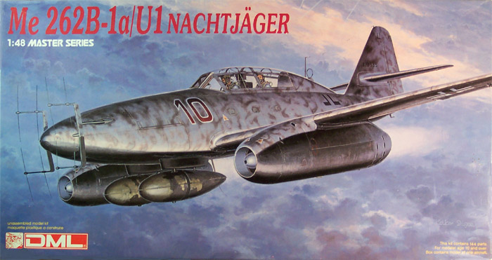
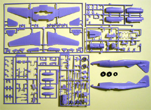
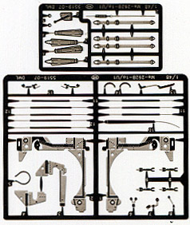
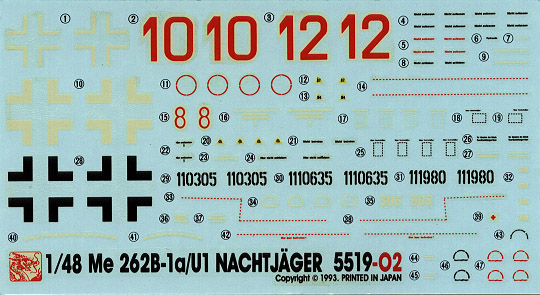

{kind=link}


Dragon Models Limited 1/48 Scale Me262B-1a/U1 Nachtjager

Kit #5519 MSRP $29.98 USD
Images and text Copyright © 2003 by Matt Swan
Developmental History
The Me262A-1a Schwalbe was the first jet fighter in history to enter operational service. With an airframe design produced by Dr Woldemar Voigt the Messerschmitt Me 262 stemmed from a previous 1938 requirement from the German Air Ministry, for a plane to be powered by the new BMW gas turbine engines. The design was for a low wing monoplane with a slight sweep on the wing leading edge. The BMW engines proved unreliable and were ultimately replaced by the Junkers Jumo 004 engines.
Due to the handling characteristics of jet powered aircraft being somewhat different from those of piston-engined aircraft the development of a two seat training version was required. This trainer, the 262B-1a, included a second seat for the instructor with a complete dual control system. Although there was a definitive night fighter version of the 262 planned with a stretched fuselage (Me262B-2a) the urgent need for night fighters resulted in production changes. After the completion of 15 trainer versions the Me262B-1a/U1 was converted to a night fighter with the simple addition of a FuG218 Neptun radar system and the Fug350 Naxos for homing in on British bombers.
In February and March of 1945 the first of these aircraft were delivered to the experimental night fighting unit Kommando Welter in defense of Berlin. In April of 1945 this unit was redesignated 10./NJG11 and was the only unit ever equipped with the 262B nightfighter.
The only two seat version to survive the war is Willow Grove's ME262 B-1a trainer. It was captured when allied forces over ran the Luftwaffe airfield at Lechfield, Germany in April 1945. Serving with the 3rd Fighter Replacement Training Group (III/EJG2), this particular aircraft had been delivered to the unit in November 1944. It had the number 35 painted in white on its fuselage sides, just forward of the cockpit. After its capture, the aircraft was turned over to the Air Technical Intelligence Unit headed by Colonel H.E. Watson. The aircraft was completely restored during the summer of 2000 and was returned to Willow Grove during September 2000.
The Kit

Sometimes I wonder if the founders of the old TriMaster Corporation realize just what they did for Luftwaffe modelers in general. This is another of those old molds that were acquired by Dragon and reproduced with the white metal parts done in plastic. This kit is on again off again for production and as of late 2003 was in production and available from hobby retailers. In 2002 it was a collectable with a market value around $50.00 USD.
The model consists of six sprues of parts cast in a very light gray polystyrene. The main body parts display finely engraved panel lines, the sprue joints are not large and there is little to no flash on any of the parts. The interior detail parts such as the wheel wells and cockpit have nice raised detail included. Unlike some of the other Dragon 262 offerings this one does not include a complete engine. There are 120 gray parts but 25 of them are not intended for use with this model. Upon a close inspection of the parts I can find no sink marks anywhere or any injection marks in areas that will present a problem for construction.

There is a single sprue of clear parts covering the canopy, an armor plate for the pilot, reflector gun-sight and wingtip lights. The canopy can be modeled in the open or closed position. The kit also includes two frets of photo-etched parts. These are for fine detail in the landing gear bays and the cockpit. Included are canopy handles, seatbelts, radar pieces and various levers and knobs for the cockpit area. Altogether there are 38 PE parts and seven clear parts included. Finally we have three of the dreaded vinyl tires. Take my advice and throw these away right away. While I have not seen any evidence of them being of the variety that eats polystyrene I have seen them dry out and split or crack after a few years on the shelf. I feel that it is very important that they be replaced with some True Details or Aires 262 wheels and tires regardless of your level of modeling skill.
Now with a total of 165 pieces you can build a pretty intricate model. You also get marking options for 3 different aircraft. The decals include a collection of red and black stencils as well as one set of national markings. They do not include the swastikas so you will need to acquire those from another source. The decals show good registry and good color density. My previous experience with Dragon decals tells me that they will react well to setting solutions and are not excessively thick.

The instruction sheet is typical a Dragon foldout giving us eight panels of information. Included is a brief history of this aircraft in six languages, a standard pictorial instruction key and a thorough paint code chart with numbers for Gunze-Sangyo Aqueous colors or Mr. Color paints as well as Italeri paint numbers. The assembly instructions are clear with good directions on folding the PE pieces for the Main gear bays. There are two pages of exterior painting instructions and decal placement guidelines.
Conclusions
This kit is a must have for any collector of Luftwaffe aircraft. It builds into a nicely detailed replica of the 262 Nightfighter and can also be built as the training version. The kit has two weak points; the lack of swastikas in the decals, which is a common problem with models from the European community and those dreaded vinyl tires. For more on the vinyl tire problem see my review of the Me262A-1/U-4. Neither of these shortcomings is insurmountable as there are plenty of 262 aftermarket goodies out there that came be readily adapted to this kit. This is one of those kits that’s great to have for building, collecting or just to hang on to for the next Ebay buying craze.